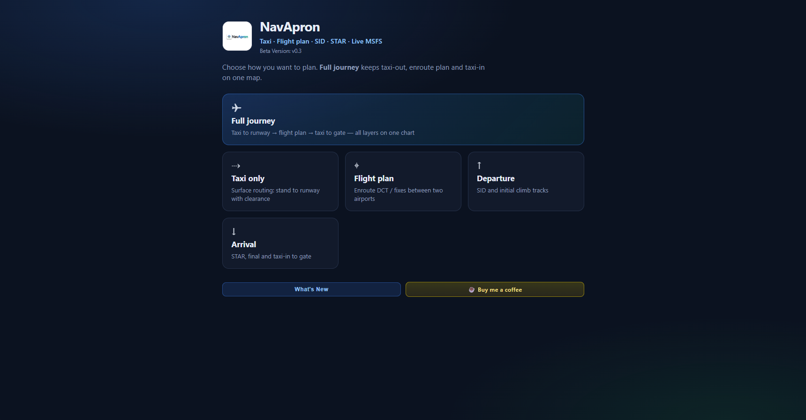
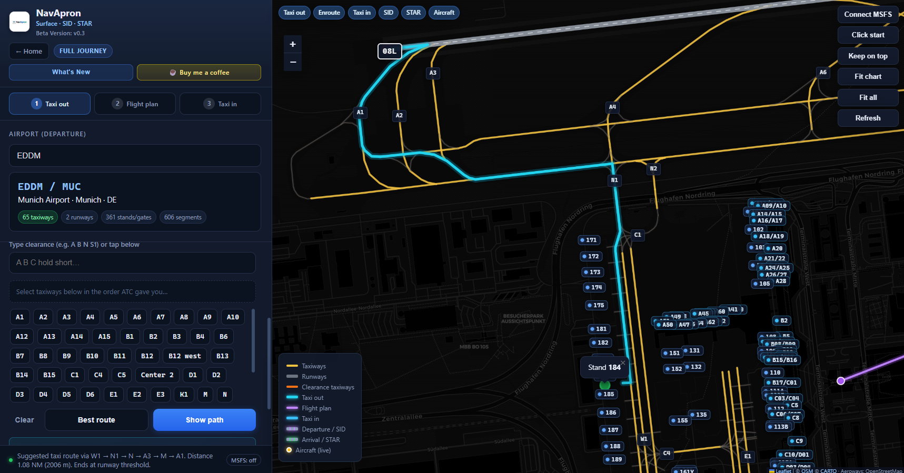
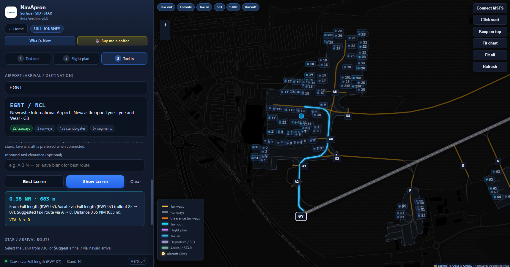
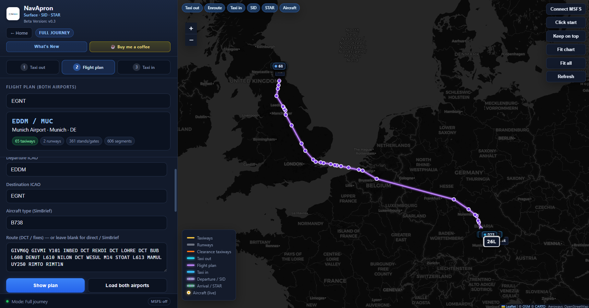
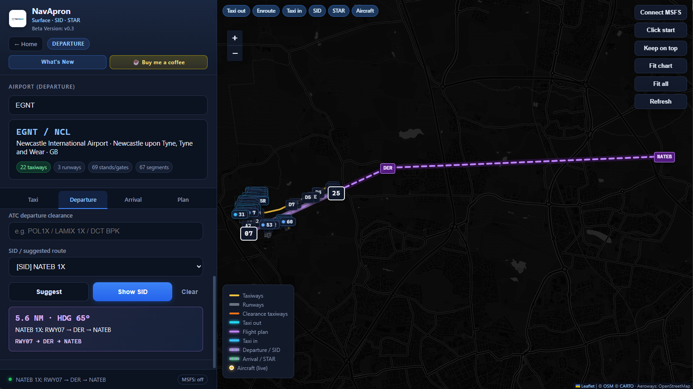

Home hub
Choose Full journey, Taxi, Flight plan, Departure or Arrival the moment you open the app.
Interactive charts for taxi, departure and arrival procedures on a single map. Plan clearances, follow live aircraft position, import SimBrief, and keep everything on a second monitor.
Taxi, flight plan and full-journey views from the current beta.





Built for the real workflow — taxi out, fly the plan, taxi in — without switching tools.
Choose Full journey, Taxi, Flight plan, Departure or Arrival the moment you open the app.
Taxi out → enroute plan → taxi in on one continuous map without wiping layers.
Show or hide taxi-out, enroute, taxi-in, SID, STAR and aircraft with one click.
Zoom instantly to the airport or to the whole drawn journey.
Pin NavApron above other windows so the chart stays visible while you fly.
Taxiways, runways, aprons and gates from OpenStreetMap — clear, high-contrast and fully zoomable.
Jump to any airport by ICAO, IATA, name or city.
Stand numbers appear when you zoom in and declutter automatically when you zoom out.
Build your clearance and get best-route pathfinding all the way to the true runway end.
Early-exit suggestions and direction-aware routing from the runway back to the gate.
Load both departure and destination airports for full surface planning on one map.
DCT and fixes via OurAirports navaids — plan the whole route without leaving NavApron.
Keep your flight plans locally and reload them whenever you need.
Open SimBrief Dispatch with departure, destination and aircraft already prefilled.
Import your latest OFP by username or pilot ID and draw the route straight on the map.
Departure SIDs and Arrival STARs displayed on the same interactive chart.
SimConnect puts your aircraft on the map in real time. Follow mode keeps you centred. Use aircraft location as taxi start.
Airports you’ve opened before load faster next time — ideal for home base and regular hubs.
Runs in its own Windows window. Keep the sim full-screen and the chart on a second display.
Three steps from download to taxi clearance.
Grab the free Windows app from flightsim.to. No installer drama — just run it alongside MSFS.
Type the ICAO or name. The interactive chart appears with taxiways, runways, aprons and gates ready to explore.
Use the clearance builder or pathfinding. Your aircraft shows live on the map via SimConnect. Follow mode keeps you centred.
Early feedback from the flight sim community.
“Finally a clean second-screen taxi chart that actually understands the apron. Pathfinding to the runway is a game-changer at big hubs.”
“I run it on my tablet-sized secondary monitor. Live aircraft position + early-exit suggestions after landing = no more guessing.”
“OpenStreetMap data is surprisingly good for taxiways. Local cache means my home base is always instant. Keep the free model please!”
Have you used NavApron? Share your feedback — the best comments may appear here.
Latest updates and improvements.
Bug reports, feature ideas, or just a quick thank-you — every message helps shape NavApron.
Free desktop companion for Microsoft Flight Simulator.
Windows · Runs in its own window
NavApron is free sim software and is safe to run. Some PCs show Windows SmartScreen or antivirus warnings because the app is not yet code-signed (common for indie desktop builds). This is a false positive, not a virus.
Only install from the official download. If Windows blocks it: More info → Run anyway. Optional: add an exclusion for the NavApron folder after you verify the source.
If NavApron helps your flights, you can support development here:
Buy me a coffee